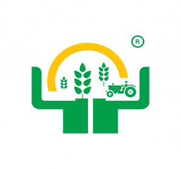

<mat-drawer-container class="example-container" autosize>
    <mat-drawer #drawer class="sidenav" fixedInViewport
    [attr.role]="(isHandset$ | async) ? 'dialog' : 'navigation'"
    [mode]="(isHandset$ | async) ? 'over' : 'side'"
    [opened]="(isHandset$ | async) === false">
    <mat-toolbar>Menu Kuu</mat-toolbar>
        <mat-divider></mat-divider>
        <mat-selection-list [multiple]="false">

            <div mat-subheader>Nyumbani</div>
            <mat-list-option [routerLink]="['/supplier-login/nav']">
                <mat-icon mat-list-icon>dashboard</mat-icon>
                <div mat-line>Nyumbani</div>
                <div mat-line>Dashibodi</div>
            </mat-list-option>
            <mat-divider></mat-divider>


            <div mat-subheader> Pembejeo Zangu</div>

            <mat-list-option [routerLink]="['products-list']">
                <mat-icon mat-list-icon>list</mat-icon>
                Orodha ya Pembejeo
            </mat-list-option>

            
            <mat-divider></mat-divider>


            <div mat-subheader> Oda Zangu</div>

            <mat-list-option [routerLink]="['pending-orders']">
                <mat-icon mat-list-icon>shopping_cart</mat-icon>
                Oda Zinazosubiria
            </mat-list-option>
            <mat-divider></mat-divider>

        </mat-selection-list>


    </mat-drawer>

    <div class="example-sidenav-content">
        <div class="navbar">
            <a>
                <button type="button" mat-button (click)="drawer.toggle()">
                    <i class="fas fa-bars"></i>
                </button>
            </a>

            <div class="chip">
                
                <h2>KILIMO NA PEMBEJEO</h2>

            </div>
            <a>
                <button mat-icon-button [matMenuTriggerFor]="menu" aria-label="Example icon-button with a menu">
                    <mat-icon>more_vert</mat-icon>
                </button>
                <mat-menu #menu="matMenu">
                    <button mat-menu-item [routerLink]="['profile']">
                        <mat-icon>account_circle</mat-icon>
                        <span>Akaunti</span>
                    </button>
                    <button mat-menu-item disabled>
                        <mat-icon>chat</mat-icon>
                        <span>Maoni</span>
                    </button>
                    <button mat-menu-item (click)="logOut()">
                        <mat-icon>power</mat-icon>
                        <span>Toka</span>
                    </button>
                </mat-menu>
            </a>
        </div>
        <div class="main">
            <router-outlet></router-outlet>
        </div>

    </div>
   


</mat-drawer-container>